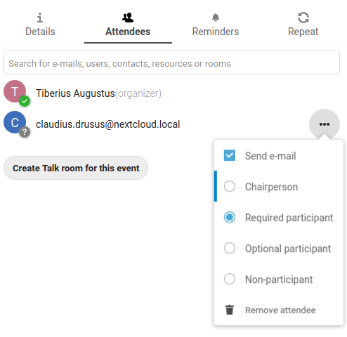

Die Kalender-App ist standardmäßig nicht aktiviert und muss separat von unserem App Store installiert werden. Bitte wenden Sie sich an Ihren Administrator.
Die Nextcloud-Kalender-App funktioniert ähnlich wie andere Kalenderanwendungen, mit denen Sie Ihre Nextcloud-Kalender und -Ereignisse synchronisieren können.
Wenn Sie zum ersten Mal auf die Kalender-App zugreifen, wird standardmäßig ein erster Kalender für Sie erstellt.
Wenn Sie einen neuen Kalender ohne Übernahme von Daten aus einem alten Kalender erstellen möchten, wählen Sie „Neuen Kalender erstellen“.
Klicken Sie auf +NeuerKalender in der linken Seitenleiste.
Geben Sie einen Namen für Ihren neuen Kalender ein, z.B. „Arbeit“, „Zuhause“ oder „Studium“.
Nachdem Sie auf das Häkchen geklickt haben, wird Ihr neuer Kalender erstellt und kann auf Ihren Geräten synchronisiert, mit neuen Terminen gefüllt und mit Ihren Freunden und Kollegen geteilt werden.
Einen Kalender bearbeiten, herunterladen oder löschen
Vielleicht möchten Sie die Farbe oder den Namen eines importierten oder neu erstellten Kalenders ändern. Oder vielleicht wollen Sie ihn auf ihre Festplatte exportieren oder dauerhaft löschen.
Bemerkung
Bitte beachten Sie, dass gelöschte Kalender nicht wiederhergestellt werden können. Nach dem Löschen ist eine Wiederherstellung nur noch möglich, wenn Sie ein lokales Backup haben.
Klicken Sie auf das Dreipunktmenü des jeweiligen Kalenders.
Klicken Sie auf Bearbeiten, Herunterladen oder löschen.
Sie können Ihre Kalender mit anderen Nutzern oder Gruppen teilen. Kalender können mit Schreibzugriff oder schreibgeschützt geteilt werden. Wenn Sie einen Kalender mit Schreibzugriff teilen, können die Nutzer, mit denen Sie den Kalender teilen, neue Termine erstellen und vorhandene Termine bearbeiten und löschen.
Bemerkung
Kalender-Freigaben können derzeit weder akzeptiert noch abgewiesen werden. Wenn Sie einen mit Ihnen geteilten Kalender abbestellen möchten, können Sie in der Kalenderliste auf das Dreipunkt-Menü neben dem Kalender klicken und „Nicht mehr mit mir teilen“ auswählen.
Kalender können über einen öffentlichen Link veröffentlicht werden, um sie für externe Benutzer einsehbar (schreibgeschützt) zu machen. Sie können einen öffentlichen Link erstellen, indem Sie das Freigabemenü für einen Kalender öffnen und auf “ + “ neben “ Link freigeben “ klicken. Nach der Erstellung können Sie den öffentlichen Link in Ihre Zwischenablage kopieren oder per E-Mail versenden.
Es gibt auch einen « Embedding-Code » zur Bereitstellung eines HTML-Iframes, um Ihren Kalender in öffentliche Seiten einzubetten.
Multiple calendars can be shared together by adding their unique tokens to the end of an embed link. Individual tokens can be found at the end of each calendar’s public link. The full address will look like
https://cloud.example.com/index.php/apps/calendar/embed/<token1>-<token2>-<token3>
To change the default view or date of an embedded calendar, you need to provide an url that look like https://cloud.example.com/index.php/apps/calendar/embed/<token>/<view>/<date>.
In this url you need to replace the following variables:
<token> with the calendar’s token.
<view> with one of month, week, day, listMonth, listWeek, listDay. The default view is month and the normally used list is listMonth.
<date> with now or any date with the following format <year>-<month>-<day> (e.g. 2019-12-28).
Auf der öffentlichen Seite können Benutzer den Abonnement-Link für den Kalender abrufen und den gesamten Kalender direkt herunterladen.
Sie können direkt von Ihrer Nextcloud aus iCal-Kalender abonnieren. Mit der Unterstützung dieses Austausch-Standards (RFC 5545) haben wir Nextcloud kompatibel zu Google Calendar, Apple iCloud und vielen anderen Kalender-Servern gemacht, mit denen Sie Kalender austauschen können. Dazu gehören auch Links zum Abonnieren von Kalendern, die auf anderen Nextcloud-Installationen veröffentlicht wurden, wie oben beschrieben.
Klicken Sie auf +NeuerKalender in der linken Seitenleiste.
Geben Sie den Link des geteilten Kalenders ein, den Sie abonnieren wollen, oder fügen Sie ihn ein.
Fertig. Ihre Kalenderabonnements werden regelmäßig aktualisiert.
Bemerkung
Abonnements werden standardmäßig wöchentlich aktualisiert, sofern Ihr Admin diese Einstellung nicht geändert hat.
Ereignisse können erstellt werden, indem Sie in den Bereich klicken, in dem das Ereignis geplant ist. In der Tages- und Wochenansicht des Kalenders klicken, ziehen und bewegen Sie den Mauszeiger über den Bereich, in dem das Ereignis stattfindet.
Die Monatsansicht erfordert nur einen einzigen Klick in den Bereich des jeweiligen Tages.
Daraufhin können Sie den Namen des Termins (z. B. Treffen mit Lukas) eingeben, den Kalender für diesen Termin auswählen (z. B. Privat, Arbeit), das Zeitfenster prüfen und konkretisieren oder den Termin als ganztägig markieren.
Wenn Sie erweiterte Details wie Ort, Beschreibung, Teilnehmer oder Erinnerungen bearbeiten oder den Termin als wiederkehrenden Termin festlegen möchten, klicken Sie auf die Schaltfläche `` Mehr … `` zum Öffnen des erweiterten Seitenleisten-Editors.
Bemerkung
Wenn Sie jedes mal den erweiterten Seitenleisten-Editor anstelle des Popups für den einfachen Termineditor öffnen möchten, können Sie im Abschnitt „Einstellungen & Import“ der App das Häkchen „Einfachen Ereigniseditor überspringen“ setzen.
Durch Klicken auf die blaue Erstellen-Schaltfläche wird der Termin endgültig erstellt.
Wenn Sie einen bestimmten Termin bearbeiten oder löschen möchten, müssen Sie nur darauf klicken. Danach können Sie alle Termindetails zurücksetzen und den erweiterten Seitenleisten-Editor öffnen, indem Sie auf Mehr... klicken.
Klicken Sie auf die Aktualisieren-Schaltfläche, um das Ereignis zu aktualisieren. Um Ihre Änderungen zu verwerfen, klicken Sie auf das Schließen-Symbol oben rechts im Popup- oder Seitenleisten-Editor.
Wenn Sie die Seitenleiste öffnen und auf das Drei-Punkte-Menü neben dem Terminnamen klicken, haben Sie die Möglichkeit, das Ereignis als .ics-Datei zu exportieren oder den Termin aus Ihrem Kalender zu entfernen.
Sie können Teilnehmer zu einem Termin hizufügen, damit diese wissen, dass sie eingeladen sind. Sie werden eine Bestätigungsanfrage per E-Mail erhalten, mittels der sie ihre Teilnahme an diesem Termin bestätigen oder verwerfen können. Teilnehmer können andere Nutzer Ihrer Nextcloud-Instanzen sein, Kontakte in Ihrem Adressbuch oder direkte E-Mail-Adressen. Sie können das Maß der Teilnahme auch benutzerspezifisch ändern oder die Bestätigung per E-Mail für einen bestimmten Teilnehmer deaktivieren.

Tipp
Wenn Sie andere Benutzer von Nextcloud als Teilnehmer zu einem Termin hinzufügen, können Sie - falls verfügbar - auf deren Informationen zur Verfügbarkeit/Belegung zugreifen, damit Sie am besten beurteilen können, wann das beste Zeitfenster für diesen Termin ist.
Achtung
Nur der Kalendereigentümer kann Einladungen verschicken, die Teilnehmer können das nicht, egal ob sie Schreibzugriff auf den Kalender des Ereignisses haben oder nicht.
Similar to attendees you can add rooms and resources to your events. The system will make sure that each room and resource is booked without conflict. The first time a user adds the room or resource to an event, it will show as accepted. Any further events at overlapping times will show the room or resource as rejected.
Bemerkung
Rooms and resources are not managed by Nextcloud itself and the Calendar app will not allow you to add or change a resource. Your Administrator has to install and possibly configure resource back ends before you can use them as a user.
Sie können Erinnerungen einstellen, damit Sie vor Beginn eines Termins benachrichtigt werden. Derzeit werden folgende Benachrichtigungsarten unterstützt :
E-Mail-Benachrichtigungen
Nextcloud-Benachrichtigungen
Sie können Erinnerungen zu einem Zeitpunkt relativ zum Ereignis oder zu einem bestimmten Datum festlegen.
Bemerkung
Nur der Kalender-Eigentümer und Personen oder Gruppen, die Schreibzugriff auf einen geteilten Kalender haben, bekommen Benachrichtigungen angezeigt. Wenn Sie trotzdem keine Benachrichtigungen bekommen, hat Ihr Administrator diese möglicherweise auf Ihrem Server abgestellt.
Bemerkung
Wenn Sie Ihren Kalender mit Mobilgeräten oder anderen Clients von Drittanbietern synchronisieren, werden dort möglicherweise auch die Benachrichtigungen angezeigt.
Ein Termin kann als „wiederkehrend“ eingegeben werden, so dass er täglich, wöchentlich, monatlich oder jährlich eingetragen wird. Dabei kann festgelegt werden, an welchem Wochentag der Termin stattfindet, oder komplexere Bedingungen aufgestellt, wie z. B. jeder vierte Mittwoch im Monat.
Sie können auch eingeben, wann die Wiederholung enden soll.
If you delete events, tasks or a calendar in Calendar, your data is not gone yet. Instead, those items will be collected in a trash bin. This offers you to undo a deletion. After a period which defaults to 30 days (your administration may have changed this setting), those items will be deleted permanently. You can also permanently delete items earlier if you wish.
The Emptytrashbin buttons will wipe all trash bin contents in one step.
Tipp
The trash bin is only accessible from the Calendar app. Any connected application or app won’t be able to display its contents. However, events, tasks and calendars deleted in connected applications or app will also end up in the trash bin.
Der Geburtstagskalender wird automatisch erstellt aus den Geburtstagen Ihrer Kontakte. Sie können diesen Kalender nur bearbeiten, indem Sie die Geburtstage bei Ihren Kontakten eintragen. Direkt bearbeiten können Sie diesen Kalender nicht.
Bemerkung
Wenn der Geburtstagskalender nicht angezeigt wird, hat Ihr Administrator dies vielleicht für Ihren Server deaktiviert.